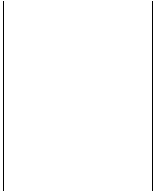
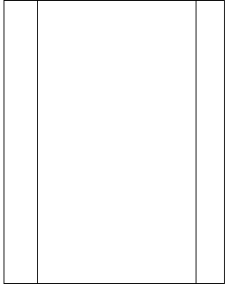

Xlayout is a HTML, CSS layout manager for easy positioning of panels in a page.
It comes with two different layouts each consisting of a maximum of three panels.
Horizontal layouts can consist of north, center and south panel. Vertical layouts are made up of west, center and east panel
Following is an example of a 3 panel horizontal layout on the left and a 3 panel vertical layout besides it.
 
Using Xlayout you can create such horizontal and vertical layouts very easily. Below is all the html that you will need to create such layouts when using Xlayout.
<div class="hlayout_north"></div> <div class="hlayout_center"></div> <div class="hlayout_south"></div>
<div class="vlayout_west"></div> <div class="vlayout_center"></div> <div class="vlayout_east"></div>
Xlayout allows for nesting of layouts. By nesting horizontal and vertical layouts together we can create traditional 5 panel page layouts consisting of header, footer, left menu and right menu.
To learn more about how to use Xlayout in your project and intermediate to advanced usage please refer to our tutorial.
Xlayout has been tested to work with the following browsers
Welcome to the tutorial section of the Xlayout documentation. Here we will begin to learn how to use Xlayout to easily build page layouts. Since Xlayout allows for deep level nesting we can combine horizontal and vertical layouts together to achieve almost any arrangement that we can ever need. Best of all we can do all of this while writing very little CSS code.
To start using Xlayout download the file xlayout.js from here.
Also download the corresponding css file xlayout.css and the images toggle-lt.gif and toggle-ht.jpg from here.
In your html document add the link to the css file
<link rel="stylesheet" type="text/css" href="xlayout.css"/>
and then a script tag for the javascript.
<script src="xlayout.js"></script>
In this section we will create a simple 5 panel layout using the xlayout system. A five panel layout typically consists of a header and footer, left and right menus and a main body.
For doing this we first add the html required to create a 3 panel horizontal layout
<div id="container"> <div class="hlayout_north">Header </div> <div class="hlayout_center">Body</div> <div class="hlayout_south">Footer</div> </div>
Each layout can have a maximum of three panels. For vertical the panel class names end with north, center and south and for horizontal they are west, center and east.
Next we need to create a left and right menu. To do this we nest a vertical layout inside the above horizontal one. Our html will look like below.
<div id="container"> <div class="hlayout_north">Header</div> <div class="hlayout_center"> <div class="vlayout_west">West</div> <div class="vlayout_center">Body</div> <div class="vlayout_east">East</div> </div> <div class="hlayout_south">Footer</div> </div>
Only the center panel in a layout is mandatory. All the panels of a layout have to be siblings and have to appear next to each other.
Finally we write the javascript to initiate Xlayout.
<script>
window.onload=function() {new Xlayout('container')};
</script>
You can do this by adding a listener to the window.onload or body.onload.
If you are using jquery then you can instantiate Xlayout inside the $(document).ready(function()
That is all the code that one needs to create a basic 5 panel layout using Xlayout.
Of course this is using all default options and there are quite a few ways to configure the behavior.
We will go into that in the later sections. For now check out the example.
In the example above if we load the example page and then resize the browser window, notice how the layout changes automatically to fit the new size of the window. Thus the layout 'scales' on browser window resize. This is the default behavior when we create the Xlayout object with only the placeholder argument.
However we can change this behavior and keep the layout fixed at a given height and width.
To do that we have to change the html to specify a height and width to the placeholder div.
<div id="placeholder" style="width:200px;height:200px;">
<div class="hlayout_north">Header</div>
<div class="hlayout_center">
<div class="vlayout_west">West</div>
<div class="vlayout_center">Body</div>
<div class="vlayout_east">East</div>
</div>
<div class="hlayout_south">Footer</div>
</div>
and we make the following change to the javascript:
<script>
window.onload=function() {new Xlayout('container', 'fixed')};
</script>
Run the example to see how the layout is not resized when the browser window is resized.
We can change the behavior to utilize the full screen and scale with browser resize if we change the argument to 'window'.
This is also the default option.
<script>
window.onload=function() {new Xlayout('container', 'window')};
</script>
It is possible to specify configuration values to set the height and width of each individual panel.
Xlayout has default values for the sizes of each panel these are:
In Addition these are the other configuration options that Xlayout has default values for.
Some of these are:
It is possible to override these default values. In this section we will show how this is to be done.
Below is the complete code for a simple 3 pane panel with a footer, left menu and content
<html>
<head>
<link rel="stylesheet" type="text/css" href="xlayout.css"/>
<script src="xlayout.js"></script>
<script>
window.onload=function() {new Xlayout('container', 'window')};
</script>
</head>
<body>
<div id="container">
<div class="hlayout_north"> Header </div>
<div class="hlayout_center">
<div class="vlayout_west"> West </div>
<div class="vlayout_center"> Body </div>
</div>
</div>
</body>
</html>
Each layout set only has center panel as mandatory. So in theory you can create a layout with only one pane though this has to be a center panel.
You can see this example here:Example
Now we will change some of the default options. We want to change the header size to only about 5% of the height and also to remove any resize bars
To do that we change the javascript to the one below.
<script>
/*A json object to override two of the default configuration options*/
window.onload=function() {new Xlayout('container', 'window',
{
default:{
northheight:5,
resizebar:false
}
})};
</script>
You can see the example here:Example
Below is a list of all the options and also the panels on which they take effect.
| Name | Description |
|---|---|
| northheight: | The height of a header panel as a percentage of its container. (Header panels only) |
| southheight: | The height of a footer panel as a percentage of its container. (Footer panels only) |
| westwidth: | The width of the left panel as a percentage of its container.(West panels only) |
| eastwidth: | The width of the right panel as a percentage of its container. (East panels only) |
| resizable: | True|False Set to true to make panels resizable.(No effect on centre panels) |
| resizebar: | True|False Set to true to have the resize bar appear.(No effect on centre panels) |
| border: | True|False Set to true to have borders appear around the panels. |
| hbarclassname: | The css classname of the horizontal resize bar. You can specify any other CSS class in place of this if you want to customize the resize bar. Default value is: "horizontal"(Header and Footer panels only) |
| vbarclassname: | The css classname of the vertical resize bar. You can specify any other CSS class in place of this if you want to customize the resize bar. Default value is: "vertical"(West and East panels only) |
| resizebartext: | If you want to put some text on the resizebar. There is no default value.(Header, Footer, West and East panels) |
You can override the above options for specific panels. In this section we will see how to do that.
Let us begin with an example page like the following:
<html>
<head>
<link rel="stylesheet" type="text/css" href="style/xlayout.css"/>
<script src="js/xlayout.js"></script>
<script>
window.onload=function() {new Xlayout('container', 'window')};
</script>
</head>
<body>
<div id="container">
<div class="hlayout_north">Header </div>
<div class="hlayout_center">
<div class="vlayout_west">West.</div>
<div class="vlayout_center">
<div class="hlayout_north">Inner North.</div>
<div class="hlayout_center">Center.</div>
</div>
</div>
<div class="hlayout_south">Footer</div>
</div>
</body>
</html>
Check out the example of the above code
Now suppose we want to change some of the default sizes of the panels.
Mainly we would like to narrow the header and footers and also remove the resize bars from them. We would also like to remove the resize bar between the Inner north and center panel.
For this we add id values to the panels we want to customize.
<div id="container"> <div id="header" class="hlayout_north">Header </div> <div class="hlayout_center"> <div class="vlayout_west">West.</div> <div class="vlayout_center"> <div id="inner_north" class="hlayout_north">Inner North.</div> <div class="hlayout_center">Center.</div> </div> </div> <div id="footer" class="hlayout_south">Footer</div> </div>
Finally we change the javascript to specify the configuration for each panel.
window.onload=function() {
new Xlayout('container', 'window',
/*A json object having key value as ids of the panels to override the default configuration options*/
{
header:{
northheight:5,
resizebar:false
},
footer:{
southheight:5,
resizebar:false
},
inner_north:{
resizebar:false
}
}
)};
You can see the example here:
Before going into learning how to add or remove borders lets look at the concept of 'container' and 'content' panes.
You can nest layouts inside of each of the header, footer, center, west and east panels.
Xlayout considers any pane that contains another layout as a 'container' pane.
On the other hand any pane that does not have another layout nested inside is called a 'content' pane.
It is not possible to specify CSS style elements to container panes. The reason for this is CSS styles will interfere with the alogrithm of laying out the nested panels.
'Content' panes on the other hand can be styled as much as you want.
The same goes for borders, the default borders only appear around content panes and the configuration option border only applies for them.
For the purpose of illustration we look at the example above with 3-level nesting but this time with helpful inline comments marking out the container and content panes
<div id="container"> <!--Content pane.--> <div class="hlayout_north">Header </div> <!--Container pane.--> <div class="hlayout_center"> <!--Content pane.--> <div class="vlayout_west">West</div> <!--Container pane.--> <div class="vlayout_center"> <!--Content pane.--> <div class="hlayout_north">Inner North</div> <!--Content pane.--> <div class="hlayout_center">Center</div> </div> </div> <!--Content pane.--> <div class="hlayout_south">Footer</div> </div>
Next we will look into how to add some custom borders to the panels.
We will start with the example that we last had. Here it is once more: custompanel
We add two more id elements to the west panel and the center. Notice that both of these are 'content' panels
<div id="container"> <div id="header" class="hlayout_north">Header </div> <div class="hlayout_center"> <div class="vlayout_west" id="west">West.</div> <div class="vlayout_center"> <div id="inner_north" class="hlayout_north">Inner North.</div> <div class="hlayout_center" id="center">Center.</div> </div> </div> <div id="footer" class="hlayout_south">Footer </div> </div>
Next we change the initialization code to turn off the borders:
window.onload=function() {
new Xlayout('container', 'window',
{
header:{
northheight:5,
resizebar:false
border:false
},
footer:{
southheight:5,
resizebar:false
},
inner_north:{
resizebar:false
},
west:{
border:false
},
center:{
border:false
}
}
)};
This will remove the default borders around the header, west and center panels.
We can then use css to customize borders around the panels. An example of this follows. Use right-click 'view source' to take a look at the kind styles used
ExampleIt is easy to customize the look and feel of the resize bars. By default the vertical bar uses the css class "vertical" and the horizontal bar "horizontal".
The classes are defined in the file xlayout.css .
Below is a very simple example customizing a horizontal resize bar:
window.onload=function() {
new Xlayout('container', 'window',
{
header:{
northheight:5,
hbarclassname:"<Your css class name.>"
resizebartext:"Custom text"
}
}
)};
<div id="container"> <div id="header" class="hlayout_north">Header </div> <div class="hlayout_center">Center</div> <div id="footer" class="hlayout_south">Footer</div> </div>
As you can see it is possible to have a text value appear inside the bar by specifying a value for the configuration option: resizebartext
For customizing the vertical bars specify a css class name with the config option: vbarclassname inside a vertical west or east panel config and to customize a horizontal resize bar use the option hbarclassname inside a horizontal header or footer panel config.
You can check out an example of customized resize bars here
Be sure to check out the code by clicking on 'view-source'
var layout = null;
window.onload=function() {
layout = new Xlayout('container');
}
layout.hidePanel("<id value of panel>");
layout.showPanel("<id value of panel>");
As seen in the code sample above, you can hide a panel by calling the function hidePanel on the xlayout object and passing in the id value of the panel to be hidden.
For showing panels call the function showPanel while passing in the id value.
A more detailed example of showing and hiding panels is linked here
You can nest xlayout inside any panel. You can also nest upto any level you want.
You are free to apply your own css styles to any 'content' panel. Be careful with 'position' and height, width css rules as these may interfere with xlayout algorithm.
An example showing nesting and styling panels is linked here